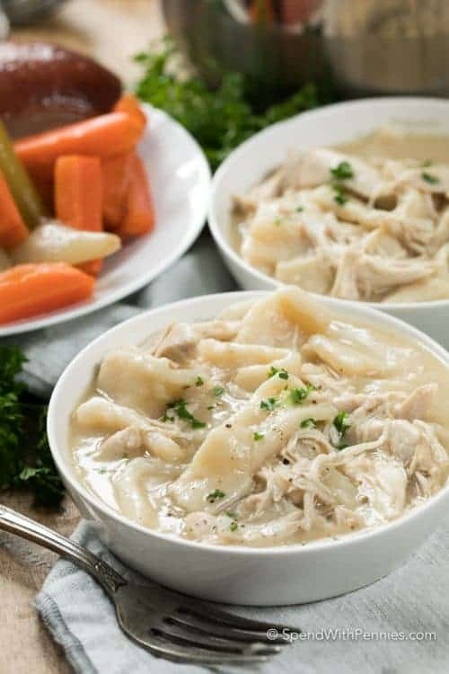

Dumplings

Old Fashioned Chicken and Dumplings is a family favorite meal that is both
comforting and delicious! This easy recipe is created from scratch including
the tender dumplings and juicy chicken in an easy homemade broth.
Ingredients
- ¾ cups flour plus extra for dusting
- ⅓ cup shortening
- ½ teaspoon baking powder
- ¾ cup milk
- ½ teaspoon salt
- 4 tablespoons cornstarch
- parsley for garnish
Steps
- Combine chicken, onion, carrots and celery in a large pot. Season to taste.
- Add chicken broth. Bring to a boil, reduce heat, and simmer covered 45-60 minutes or until chicken is tender. While broth is simmering, prepare dumplings below.
- Remove chicken and vegetables from broth. Discard skin and bones and chop remaining chicken, set aside.
- Gently add dumplings to broth. Simmer 15-20 minutes or until tender.
- Stir chicken (and vegetables if desired) into broth and cook about 2-3 minutes or until heated through.
- In a small bowl combine 4 tablespoons cornstarch with 4 tablespoons water.
- Add to boiling broth a little bit at a time stirring to reach desired consistency.
- Combine flour, baking powder, salt and shortening with a fork until shortening is mixed in.
- Add milk a little at a time and mix until combined (you may not need all of it, you want a soft but not sticky dough).
- Knead a few times on a floured surface until dough is smooth.
- Generously flour your surface and roll the dough out to ⅛″ thick. Cut dough into 1″ x 2″ strips. Flour generously to avoid sticking.
- Cook in broth as directed above.